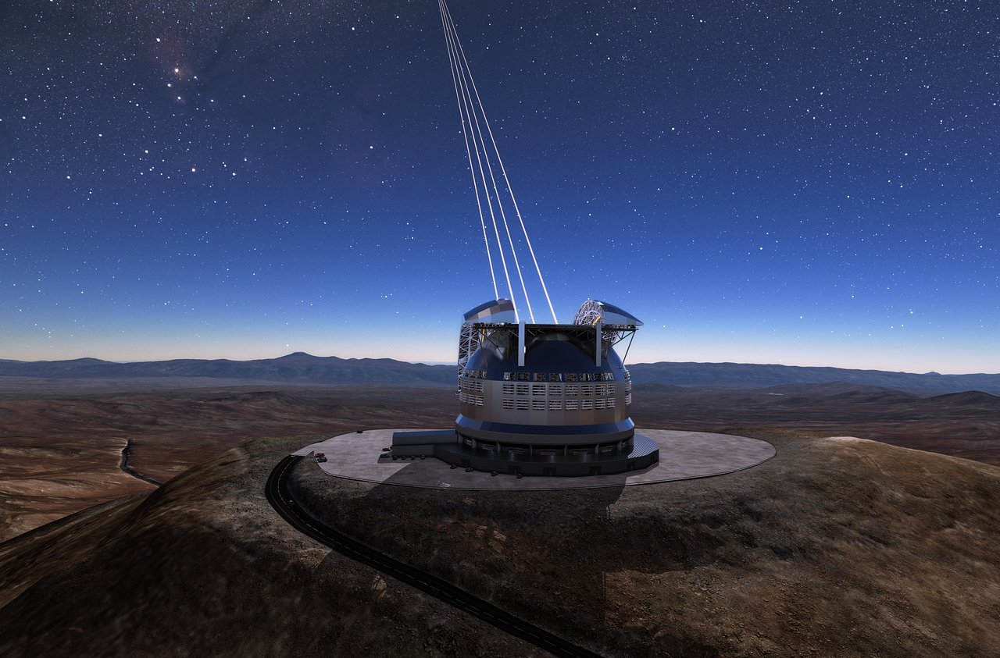
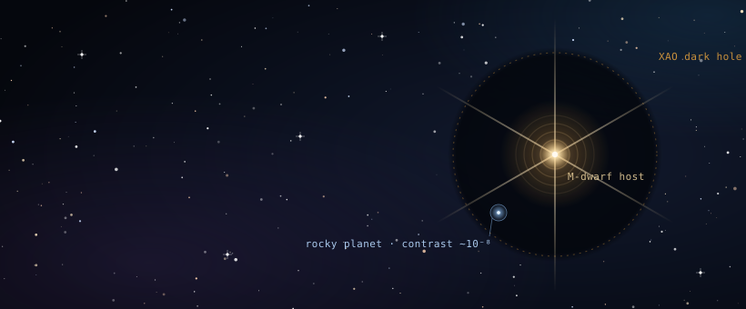
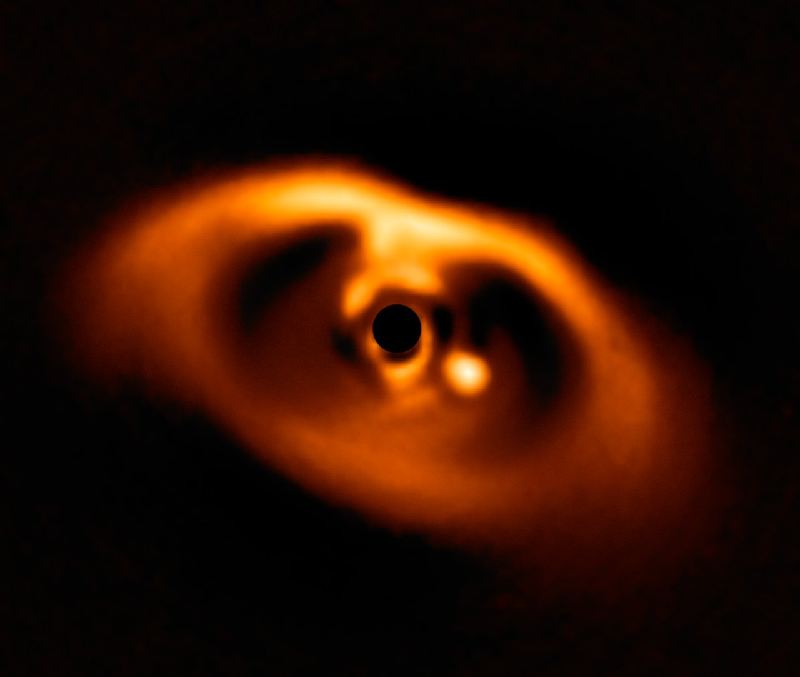
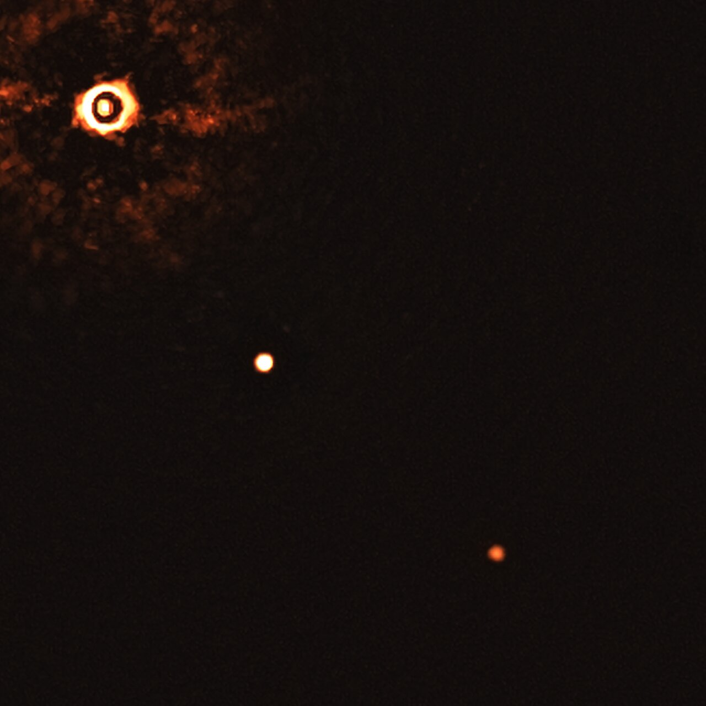
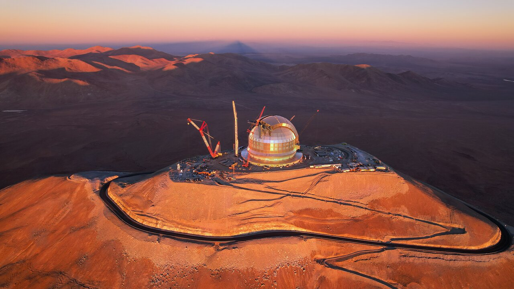
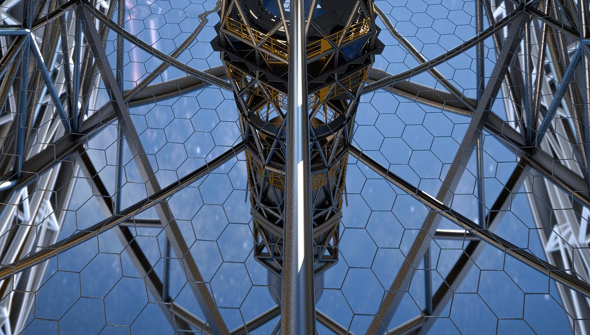
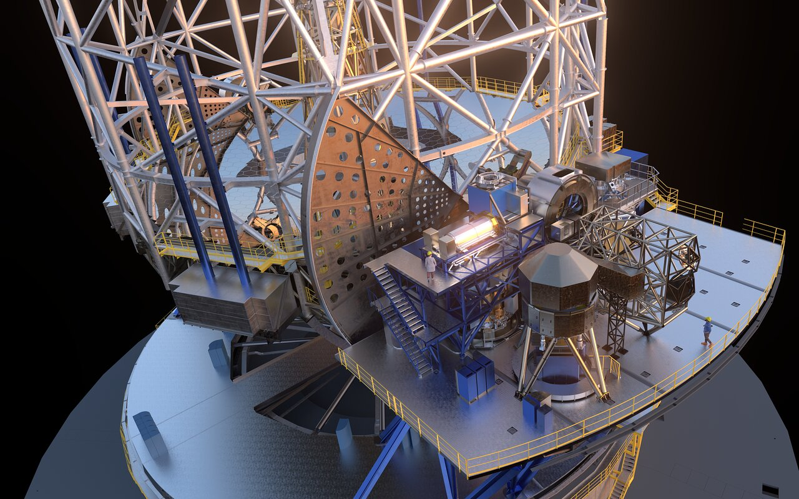

FCT exploratory project · ELT · Planetary Camera and Spectrograph
The extreme adaptive optics of the Extremely Large Telescope — super-resolution wavefront sensing for imaging rocky, temperate exoplanets with ESO’s 39-metre telescope.
The Extremely Large Telescope, with a 39-metre primary mirror, will for the first time make it possible to directly image rocky planets in the habitable zones of nearby stars and search their atmospheres for signs of life. Doing so is one of the ELT’s highest scientific priorities, and it is the reason for PCS — the Planetary Camera and Spectrograph, the ELT instrument dedicated to imaging and characterising exoplanets.
The difficulty is contrast. An Earth-sized planet orbiting an M dwarf is about a hundred million times fainter than its star, and only milliarcseconds away from it. The atmosphere blurs the starlight into a halo that buries the planet. Only an extreme adaptive optics (XAO) system — measuring and correcting the turbulence thousands of times per second with exquisite accuracy — can carve out the dark region around the star where such a planet becomes visible.

On ESO’s 8-metre Very Large Telescope, the SPHERE instrument — itself an XAO system — already photographs young, hot giant planets glowing in the infrared. PCS aims to go several orders of magnitude deeper, to mature, temperate, rocky worlds.


ESO and the community have launched an R&D collaboration for PCS, in which I lead the XAO task. Ciao PCS focuses on the heart of that system: the wavefront sensor and how its signal is turned into a correction.
sensor → reconstructor → deformable mirror: closed loop, ~kHz
The project builds on a reconstruction technique that combines diffraction theory with ideas from computer vision to reach super-resolution: it abandons the conventional regular, uniform sampling of the sensor signal and recovers spatial frequencies beyond the classical Nyquist limit of the sensor.
Applied to the pyramid wavefront sensor, the method can recover both the phase and the amplitude of the incoming light. Combined with non-uniform sampling, this points to a compact, efficient and robust sensing scheme with high reconstruction accuracy — exactly what a PCS-class XAO system needs to reach its contrast goals.
The ELT is under construction on Cerro Armazones in Chile’s Atacama Desert. Its primary mirror of 798 hexagonal segments, each 1.4 m across, will gather about thirteen times more light than the largest optical telescopes operating today.



Carlos M. Correia
Principal investigator
Bachar Wehbe
Collaborator, University of Porto · differential chromatic effects & the atmospheric dispersion compensator (ADC)
Timothée Vène
Postdoc · PCS wavefront control strategy
Miguel Miranda Santos
PhD student · reinforcement learning for XAO control
Host institution: Universidade do Porto.
Full-Rank Reconstruction with Pyramid Wavefront Sensors: Super-Resolution Beyond Nyquist
Astronomy & Astrophysics, submitted (2026)
Assessing reinforcement learning in XAO control for PCS
Proc. SPIE 14150, Adaptive Optics Systems X — SPIE Astronomical Telescopes + Instrumentation, Copenhagen (2026)
The elusive PyWFS: can up to 4x the (spatial) bandwidth and amplitude+phase measurements be made with pyramid sensors?
Proc. SPIE 13097, Adaptive Optics Systems IX (2024)
Ciao PCS is funded by national funds through FCT – Fundação para a Ciência e a Tecnologia, I.P., under the 2024 call for Exploratory Research Projects, project 2024.16728.PEX. The PI is supported by FCT through the Scientific Employment Stimulus contract 2022.01293.CEECIND/CP1733/CT0012.
Publications arising from the project should acknowledge:
This work was supported by national funds through FCT – Fundação para a Ciência e a Tecnologia, I.P., under project 2024.16728.PEX (https://doi.org/10.54499/2024.16728.PEX) and contract 2022.01293.CEECIND/CP1733/CT0012 (https://doi.org/10.54499/2022.01293.CEECIND/CP1733/CT0012).
Photographs and renderings: ESO, licensed under CC BY 4.0, credits as shown with each image (the header image is cropped). Dark-hole schematic: original illustration.